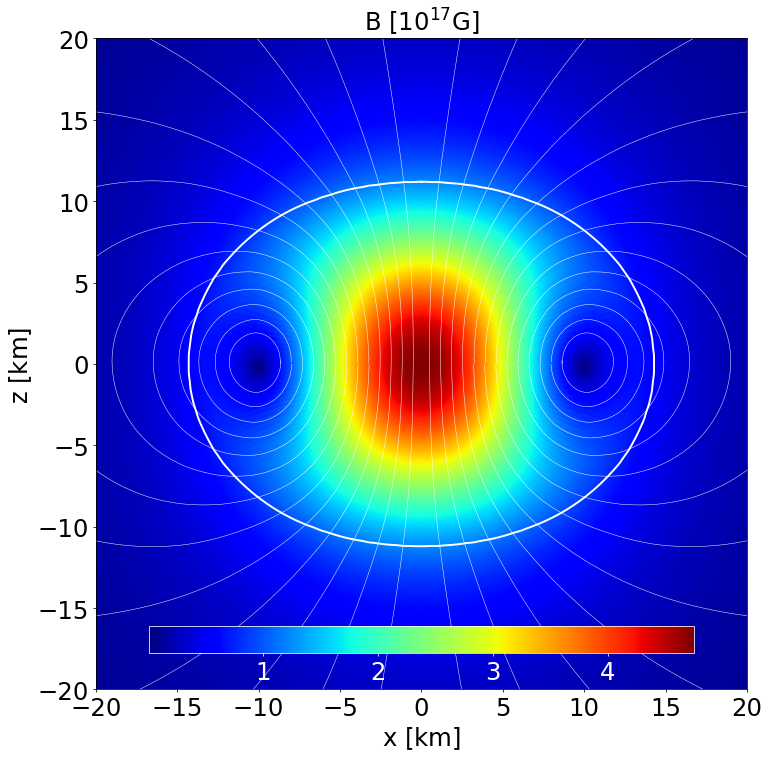

Examples in GR
Here we present a few examples in standard GR to show how to work with the code, with a few related plots. All cases have been run on a simple laptop.
In order to run a test, please copy the corresponding SYSTEMXNS.f90 file from the selected test directory (e.g. documentation/examples/GR/NonRotMagPoloPol2/) in the main code’s directory, and check the final results against the LogFile.dat file, provided for that example in the same directory.
Non-rotating NS in GR with the POL2 EoS and a purely poloidal magnetic field
This is a static model of an NS in GR described by the analytic POL2 EoS, endowed with a purely poloidal field. It has a central density \(\rho _\mathrm{c}=8.3\times 10^{-4}\) in code units (corresponding to \(5.15\times 10^{14}\) gcm\(^{-3}\)) and a Komar mass of \(1.442\) M\( _\odot\). The circumferential radius is \(16.559\) km.
Here are some of the main parameters used to compute this model. The detailed log with all the parameters can be found in the corresponding LogFile.dat.
NR = 900, NTH = 100, NRREG = 600, MLS = 20, NGQ = 50, RREG = 13, RMAXSTR = 100,
RMAX = 100, REQMAX = 13.50, RHOINI = 8.30E-4, ALPHA0 = 0.0, BETA0 = 0.0, GR = .TRUE.,
STRETCH = .TRUE., ANALYTIC = .TRUE., CONVHELP = .FALSE., QFACTOR = 0.85, QFACTORCHI = 0.45,
QFACTORMETRIC = 0.35, QRELAX = 0.30, QAPHI = 0.50, EOSINT = .FALSE., K1 = 110.0, GAMMA = 2.0,
IMAG = .TRUE., IPOL = .TRUE., KBPOL = 0.34135, NPOL = 0.0, CSI = 0.0
Section of the NS in the \(x-z\) plane along with the contours the density. |
 |
|---|
Section of the NS in the \(x-z\) plane along with the contours the poloidal magnetic field strength and its field lines. |
|
|---|
Radial profile of the NS density at the pole and at the equator. |

Radial profile of the NS pressure at the pole and at the equator. |
|
|---|
Radial profile of the lapse function at the pole and at the equator. |

Radial profile of the conformal factor at the pole and at the equator. |
|
|---|
Radial profile of the poloidal magnetic field strength at the pole and at the equator. |

Non-rotating NS in GR with the POL2 EoS and a purely toroidal magnetic field
This is a static model of an NS in GR described by the analytic POL2 EoS, endowed with a purely toroidal field. It has a central density \(\rho _\mathrm{c}=1.366\times 10^{-3}\) in code units (corresponding to \(8.473\times 10^{14}\) gcm\(^{-3}\)) and a Komar mass of \(1.597\) M\( _\odot\). The circumferential radius is \(20.264\) km.
Here are some of the main parameters used to compute this model. The detailed log with all the parameters can be found in the corresponding LogFile.dat.
NR = 900, NTH = 100, NRREG = 600, MLS = 20, NGQ = 50, RREG = 13, RMAXSTR = 100,
RMAX = 100, REQMAX = 15.50, RHOINI = 1.366E-3, ALPHA0 = 0.0, BETA0 = 0.0, GR = .TRUE.,
STRETCH = .TRUE., ANALYTIC = .TRUE., CONVHELP = .FALSE., QFACTOR = 0.85, QFACTORCHI = 0.45,
QFACTORMETRIC = 0.35, QRELAX = 0.30, QAPHI = 0.50, EOSINT = .FALSE., K1 = 110.0, GAMMA = 2.0,
IMAG = .TRUE., ITOR = .TRUE., BCOEF = 3.746, NPOL = 0.0, CSI = 0.0
Section of the NS in the \(x-z\) plane along with the contours the density. |
Section of the NS in the \(x-z\) plane along with the contours the toroidal magnetic field strength. |
|
|---|
Radial profile of the NS density at the pole and at the equator. |

|
|---|
Radial profile of the NS pressure at the pole and at the equator. |

Radial profile of the lapse function at the pole and at the equator. |
|
|---|
Radial profile of the conformal factor at the pole and at the equator. |

|
|---|
Radial profile of the toroidal magnetic field strength at the pole and at the equator. |

Non-rotating NS in GR with the POL2 EoS and a twisted magnetosphere
This is a static model of an NS in GR described by the analytic POL2 EoS, endowed with a twited-torus magnetosphere. It has a central density \(\rho _\mathrm{c}=1.380\times 10^{-3}\) in code units and a Komar mass of \(1.5498\) M\( _\odot\). The circumferential radius is \(14.261\) km and the star is spherical, given a magnetic energy ratio as low as \(\sim 10^{-7}\).
Here are some of the main parameters used to compute this model. The detailed log with all the parameters can be found in the corresponding LogFile.dat.
NR = 600, NTH = 100, NRREG = 300, MLS = 40, NGQ = 80, RREG = 20, RMAXSTR = 100,
RMAX = 100, REQMAX = 15.0, RHOINI = 1.366E-3, GR = .TRUE.,
STRETCH = .TRUE., ANALYTIC = .TRUE., CONVHELP = .FALSE., QFACTOR = 0.85, QFACTORCHI = 0.45,
QFACTORMETRIC = 0.35, QRELAX = 0.30, QAPHI = 0.50, EOSINT = .FALSE., K1 = 110.0, GAMMA = 2.0,
IMAG = .TRUE., ITOR = .FALSE., IPOL = .FALSE., ITWT = .TRUE., KPTT = 3.4E-4, ZETA = 0.0, CUT = 4.0
Section of the NS in the \(x-z\) plane along with tthe contours the poloidal magnetic field strength. |
Section of the NS in the \(x-z\) plane along with the contours the toroidal magnetic field strength. |
Section of the NS in the \(x-z\) plane along with the contours the toroidal current density. |
Uniformly Rotating, unmagnetised NS in GR with the Pol2 EoS
This is a model of a uniformly rotating NS in GR described by the analytic POL2 EoS, with no magnetic fields. It has a central density \(\rho _\mathrm{c}=1.280\times 10^{-3}\) in code units and a Komar mass of \(1.6912\) M\( _\odot\). The circumferential radius is \(19.2496\) km and the ratio of polar to equatorial radii is 0.5943. This is basically the BU8 case of Stergioulas et al. (2004) with rotation rate \(\Omega=0.002633\).
Here are some of the main parameters used to compute this model. The detailed log with all the parameters can be found in the corresponding LogFile.dat.
NR = 250, NTH = 100, NRREG = 250, MLS = 40, NGQ = 80, RREG = 10, RMAXSTR = 100,
RMAX = 20, REQMAX = 11.60, RHOINI = 1.28E-3, GR = .TRUE.,
STRETCH = .TRUE., ANALYTIC = .TRUE., EOSINT = .FALSE.,
K1 = 110.0, GAMMA = 2.0, OMG = 2.633E-2, DIFFERENTIAL = .FALSE.
IMAG = .FALSE.
Section of the NS in the \(x-z\) plane along with the contours the poloidal magnetic field strength. |
Section of the NS in the \(x-z\) plane along with the contours the toroidal magnetic field strength. |
Section of the NS in the \(x-z\) plane along with the contours the toroidal current density. |
Differnetially Rotating, unmagnetised NS in GR with the APR EoS
This is a model of a differentially rotating NS in GR described by the tabulated APR EoS, with no magnetic fields. It has a central density \(\rho _\mathrm{c}=1.280\times 10^{-3}\) in code units and a Komar mass of \(1.3505\) M\( _\odot\). The circumferential radius is \(12.519\) km and the ratio of polar to equatorial radii is 0.7493. Rotation follows the Uryu 3 law, done in J-space.
Here are some of the main parameters used to compute this model. The detailed log with all the parameters can be found in the corresponding LogFile.dat.
NR = 500, NTH = 200, NRREG = 500, MLS = 40, NGQ = 80, RREG = 10, RMAXSTR = 100,
RMAX = 20, REQMAX = 15.00, RHOINI = 1.28E-3, GR = .TRUE.,
STRETCH = .FALSE., ANALYTIC = .FALSE., EOSINT = .TRUE.,
K1 = 100.0, GAMMA = 2.0, OMG = 2.22E-2, DIFFERENTIAL = .TRUE.,
URYULAW3 = .TRUE., OMGSPACE = .FALSE., PROTDIFF = 1.5, OMGMAX = 4.44E-22,
RMVALUE = 2.50, IMAG = .FALSE.
Section of the NS in the \(x-z\) plane along with the contours the density. |
Section of the NS in the \(x-z\) plane along with the contours the velocity. |
Radial profile of the density at the pole and at the equator. |
Radial profile of the pressure at the pole and at the equator. |
Uniformly Rotating, poloidal magnetised NS in GR with the Pol2 EoS
This is a model of a uniformly rotating NS in GR described by the analytical Pol2 EoS, with poloidal magnetic field. It has a central density \(\rho _\mathrm{c}=6.94\times 10^{-4}\) in code units and a Komar mass of \(1.55\) M\( _\odot\). The circumferential radius is \(17.74\) km and the ratio of polar to equatorial radii is 0.6368.
Here are some of the main parameters used to compute this model. The detailed log with all the parameters can be found in the corresponding LogFile.dat.
NR = 600, NTH = 100, NRREG = 600, MLS = 40, NGQ = 80, RREG = 10, RMAXSTR = 30,
RMAX = 30, REQMAX = 15.00, RHOINI = 6.945E-4, GR = .TRUE.,
STRETCH = .FALSE., ANALYTIC = .FALSE., EOSINT = .TRUE.,
K1 = 100.0, GAMMA = 2.0, OMG = 0.5E-2, DIFFERENTIAL = .FALSE.,
IMAG = .TRUE. ITOR = .FALSE., IPOL = .TRUE., KBPOL = 0.3973
Section of the NS in the \(x-z\) plane along with the contours the density. |
Section of the NS in the \(x-z\) plane along with the contours the velocity. |
Section of the NS in the \(x-z\) plane along with the contours the poloidal magnetic field strength. |
Section of the NS in the \(x-z\) plane along with the contours the poloidal electric field strength. |